软件项目管理
第一章
项目3约束
范围
- 项目的任务？
- 顾客或发起人要通过项目获取产品或服务是什么？
时间
成本
实现项目目标的制约因素
※软件项目管理定义
- 为使软件项目能按预定成本，进度，质量要求顺利完成，而对成本，人员，进度，质量，风险等进行分析和管理的活动
※软件项目管理的5个标准化过程组及其关系

第二章 软件项目生存期模型
软件项目生存期模型
定义及特征
- 软件开发的一种框架
- 说明了软件的活动和进行软件开发的过程
- 这个模型可以是以活动为中心，可以以产品为中心的
- 描述了开发的主要阶段
- 定义了每一个阶段要完成的主要过程和活动
- 规范了每一个阶段的输入和输出
- 提供了一个框架， 可以将必要的活动映射到该框架中
常用的软件生存期模型
- 瀑布模型
- V型模型
- 原型模型
- 增量式模型
- 螺旋式模型
- 快速应用开发模型
- 喷泉模型
瀑布模型

- 特点
- 开发活动线性组织，没有反馈过程，不允许或者限制变更
- 里程碑，或文档驱动，需要严密控制
- 用户直到项目结束才能看到质量如何
- 使用指南
- 开发前
- 系统概念开发和系统配置开发
- 概念开发主要是确定系统级的需求，提交一份SOW（Statement of Work）
- 系统配置开发主要是确定软件和硬件的情况
- 开发中
- 开发后
- 适合的项目
- 项目的需求、解决方案在项目开始前很明确
- 类似的项目如：
V型模型

- 特点
- 强调测试过程与开发过程的对应性和并行性
- 没有反映实际的开发过程
- 使用指南
- 严格按照顺序进行开发
- 注意开发过程和测试过程的并行性
- 适合的项目类型
原型模型

特点
- 需求定义之前，需要快速构建一个原型系统
- 用户根据快速构建的原型系统的优缺点，给开发人员提出反馈意见
- 根据反馈意见修改软件需求，使系统可以更正确地反映用户的需求
可以减少项目的各种假设以及风险等
使用指南
- 用户和开发人员利用快速分析技术共同定义需求和规格
- 设计者构建一个原型系统
- 设计者演示这个原型系统，用户来评估性能并标识问题
- 用户和设计者一起来解决标识的问题，循环这个过程，直到用户满意
- 详细设计可以根据这个原型进行
- 原型可以用代码或者工具来实施
适合的项目类型
- 在项目开始前项目的需求不明确
- 需要减少项目的不确定性
- 类似的项目如：
增量式模型

特点
- 可以避免一次性投资太多带来的风险，将主要的功能或者风险大的功能首先实现，然后逐步完善
- 可以更快地开发出可操作的系统
- 可以减少开发过程中用户需求的变更
- 一些增量可能需要重新开发
使用指南
- 首先构建整个系统的 核心部分
- 然后逐步地增加功能和性能
适合的项目类型
- 项目开始时明确了大部分的需求，但是需求可能会发生变化的项目
- 对于市场和用户把握不很准，需要逐步了解的项目
- 对于有庞大和复杂功能的系统进行功能改进时需要一步一步实施的项目
螺旋式模型

特点
- 表现为瀑布模型的多次迭代
- 可以将每个阶段进行更细的划分
- 通过风险管理进行驱动
- 用户可以更早看到产品，可以不断对产品进行评估
- 项目的投资不用一次性投入
- 可以给开发人员更多的反馈信息
使用指南
- 采用最低成本开发对项目有用的一部分
- 允许设计的变动
- 选择比较小的步伐循序渐进
- 需求规格处于可修改状态
- 项目中有很多风险，注意风险的控制
适合的项目类型
- 风险是主要的制约因素的项目
- 不确定因素和风险限制了项目进度的项目
- 用户对自己的需求不适很明确的项目
- 需要对一些基本的概念进行验证的项目
- 可能发生一些重大变更的项目
- 规模很大的项目
- 采用了新技术的项目
快速应用开发模型
喷泉模型

迭代开发
- 是统一开发过程的关键实践
- 开发被组织成一系列固定的短期小项目
- 每次迭代都产生经过测试、集成并可执行的局部系统
- 每次迭代都具有各自的需求分析、设计、实现和测试
- 随着时间和一次次迭代，系统增量式完善
敏捷方法
敏捷宣言
- 个体和迭代、超越过程和工具；
- 工作的软件、超越完整的文档；
- 客户协作、超越合同谈判；
- 相应变更，查阅履行计划
软件过程改进
- 提高软件过程能力的实践通称为软件过程改进（Software Process Improvement）
CMM
第三章 软件项目需求管理
需求工程的层次分解
- 需求开发
- 需求开发后形成了基准需求规格，之后进入需求管理
- 需求管理
需求跟踪
- 需求跟踪有两种方式，正向跟踪和逆向跟踪。
- 正向跟踪以用户需求为切入点，检查用户需求说明书或需求规格说明中的每个需求是否都能在后继工作中找到对应点。
- 逆向跟踪检查设计文档、代码、测试用例等工作产品是否都能在需求规格说明中找到出处。
需求建模基本方法
原型分析方法
- 原型方法的定义
- 按照用户的需要，快速形成一个操作流程界面（低保真模型、高保真模型）
- 可能只是一个框架，具体的功能没有实现，只是结果
- 静态的操作流程，以便与用户快速就需求达成一致
- 主要考虑系统的功能需求，很少考虑非功能需求
- 原型方法的类型
- 进化型
- 开发出来用于了解问题，并形成被交付软件的部分或全部的基础
- 抛弃型
- 开发出来获以便更多地了解问题或探究可能的方案的灵活性或者合理性，是尝试性软件，不用于被交付软件的实际部分
结构化分析方法
- 结构化分析方法的定义（SA,Structured Analysis）
- 20世纪70年发展起来的面向数据流的方法
- 是一种自顶向下逐步求精的分析方法
- 根据软件内部数据传递、变换的关系进行分析的
- 结构化分析方法-技术
用例分析方法


功能列表方法
第四章 软件项目任务分解
任务分解定义
将项目分解为更多的工作细目和子项目，使项目更小，更易管理，易操作
目的：提高估算成本，时间和资源的准确性
是对需求的进一步细化，是最后确定项目所有任务范围的过程
结果是任务分解结构(Work breakdown structure, WBS)
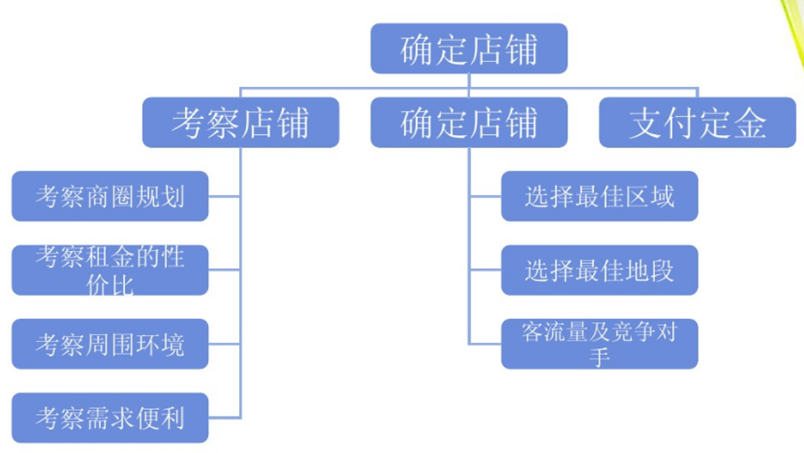
WBS定义
- WBS(Work Breakdown Structure)是将一个项目分解成易于管理的几个部分或几个细目，以便确保找出完成项目工作范围所需的所有工作要素
- WBS按照项目发展的规律，依据一定的原则和规定，进行系统化的、相互关联和协调的层次分解
- 结构层次越往下层则项目组成部分的定义越详细，WBS最后构成一份层次清晰，可以具体作为组织项目实施的工作依据
- WBS是管理项目范围的基础，详细描述了项目所要完成的工作
- 思想：分而治之
如何理解WBS
- WBS是用来确定项目范围的，必须包括项目的所有工作
- WBS是把所有项目工作逐层分解到较小的、便于管理的要素（可交付成果）
- WBS的最低层元素是能够被评估的，可以安排进度的和被追踪的
- 没有包含在WBS中的工作就不是项目范围内的工作，都不要做。如果要做，必须通过范围控制过程。
- WBS的编制需要“全员参与”，项目经理主要发挥“整合者”的作用
工作分解的层次
第一层——项目群
- 或者叫大项目，也可以叫工程项目
- 一个项目群是由多个项目构成的复杂工程。
第二层——项目
- 例如，发动机设计本身就是一个项目，有自己的项目经理与项目小组，可以是汽车制造公司自己来做，也可以转包给其他公司。
第三层——任务
- 就是完成项目必须进行的工作。
- 设计发动机必须要设计缸体、缸盖、润滑系统、冷却系统等，这就是发动机设计项目的任务。
第四层——活动
- 即完成任务需要做什么。
- 设计发动机缸体要设计其外形尺寸、内部结构以及决定使用什么样的材料等，这实际上就是完成发动机缸体设计任务需进行的具体活动。
第五层——工作包
- 活动的构成单元，它体现了活动是如何做的。
- 例如，设计发动机缸体的外形尺寸时，需要用尺子、画笔或借助计算机绘图工具，将尺寸确定下来，并将各个不同尺寸的线条连接成整体，这就是设计外形尺寸的工作包。
第六层——工作单元
- 执行工作包的具体动作或努力方向。
- 在一般的WBS中，不需要分解到具体动作层。
如何理解WBS字典
- WBS词典，是在制定WBS过程中生成，并与WBS配合使用的说明性文件。包括：
- 每个WBS要素，列出帐户编号、工作说明书、负责的组织、以及进度里程碑清单。
- WBS要素的其他相关信息，如合同要求、质量要求、以及技术参考文献。
- 控制帐户的其他相关信息，如收费编号。
- 工作包的其他相关信息，如计划活动安排表、所需资源、以及费用估算清单。
WBS的编码
责任矩阵
第五章 软件项目成本管理
成本
直接成本：人员工资，材料费，外包成本
间接成本：企业运营成本，如房租，水电等
参数模型估算法COCOMO
$$
Effort = C1EAF(Size)^{P_1}\
Time = C2(Effort)^{P_2}
$$
- Effort:人月的数量
- C1:工作量的长整数系数
- EAF:刻画领域、人员、环境以及生长过程的制品所用的工作量调整引子
- Size:最终产品的大小
- P1:刻画用于生产最终产品的过程的内在的规模经济的指数，特别是避免无附加值活动的过程的能力
- Time：总月数
- C2:进度的长整数系数
- P2:刻画在管理一个软件开发工作中内在的惯性和并行性的指数
有组织模式
- 内部的、低复杂度的、具有灵活过程的开发，特性、质量、 成本和进度都可用很小的代价自由的变更
$$
Effort = 3.2EAF(Size)^{1.05}\
Time = 3.0(Effort)^{0.38}
$$
嵌入式模式
$$
Effort = 3.2EAF(Size)^{1.2}\
Time = 2.8(Effort)^{0.35}
$$
软件开发和服务项目价格构成及评估方法
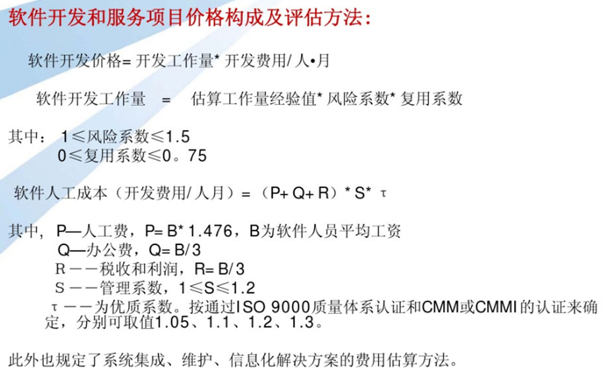
代码行、功能点及对象点
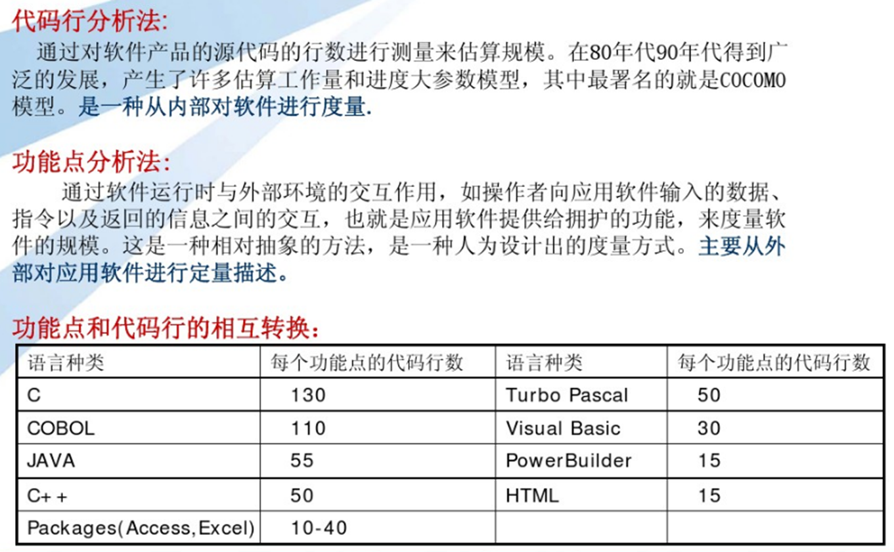
- 代码行Lines of Code：从软件程序量的角度定义项目规模
- 功能点：用系统的功能数量来测量规模
- FP=UFC×TCF。其中：UFC为调整功能点计数，TCF技术复杂度因子
| 软件需求的功能计数项 |
|
|
|
|
简单 |
一般 |
复杂 |
| 外部输入 |
6 |
2 |
3 |
| 外部输出 |
7 |
7 |
0 |
| 外部查询 |
0 |
2 |
4 |
| 外部文件 |
5 |
2 |
3 |
| 内部文件 |
9 |
0 |
2 |
| 五类功能计数项的复杂度权重 |
|
|
|
|
简单 |
一般 |
复杂 |
| 外部输入 |
3 |
4 |
6 |
| 外部输出 |
4 |
5 |
7 |
| 外部查询 |
3 |
4 |
6 |
| 外部文件 |
5 |
7 |
10 |
| 内部文件 |
7 |
10 |
15 |
| 计算UFC的结果 |
|
|
|
| 项 |
简单 |
一般 |
复杂 |
| 外部输入 |
6*3 |
2*4 |
3*6 |
| 外部输出 |
7*4 |
7*5 |
0*7 |
| 外部查询 |
0*3 |
2*4 |
4*6 |
| 外部文件 |
5*5 |
2*7 |
3*10 |
| 内部文件 |
9*7 |
0*10 |
2*15 |
| 总计 |
134 |
65 |
102 |
| UFC |
301 |
|
|
| 技术复杂度因子 |
|
|
|
| F1 |
可靠的备份和恢复 |
F2 |
数据通信 |
| F3 |
分布式函数 |
F4 |
性能 |
| F5 |
大量使用的配置 |
F6 |
联机数据输入 |
| F7 |
操作简单性 |
F8 |
在线升级 |
| F9 |
复杂界面 |
F10 |
复杂数据处理 |
| F11 |
重复使用性 |
F12 |
安装简易性 |
| F13 |
多重站点 |
F14 |
易于修改 |
| 技术复杂度因子的取值情况 |
|
| 调整系统 |
描述 |
| 0 |
不存在或者没有影响 |
| 1 |
不显著的影响 |
| 2 |
相当的影响 |
| 3 |
平均的影响 |
| 4 |
显著的影响 |
| 5 |
强大的影响 |
计算TCF
- 评估影响系统功能规模的14个技术复杂度因子（TCF）
- TCF=0.65+0.01(sum(Fi)), i=1,2,…,14 , 0<=Fi<=5
- 0.65<=TCF<=1.35
人月成本估算
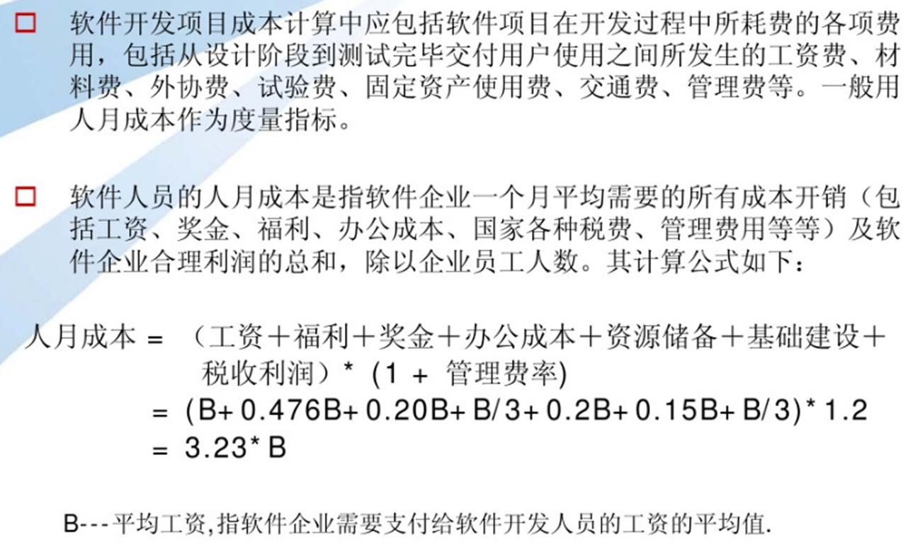
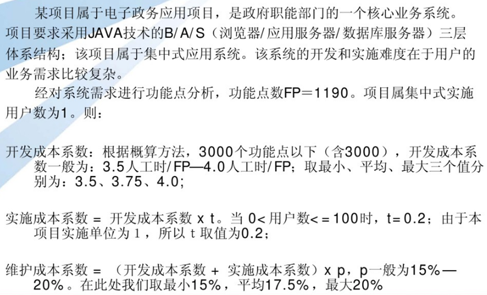
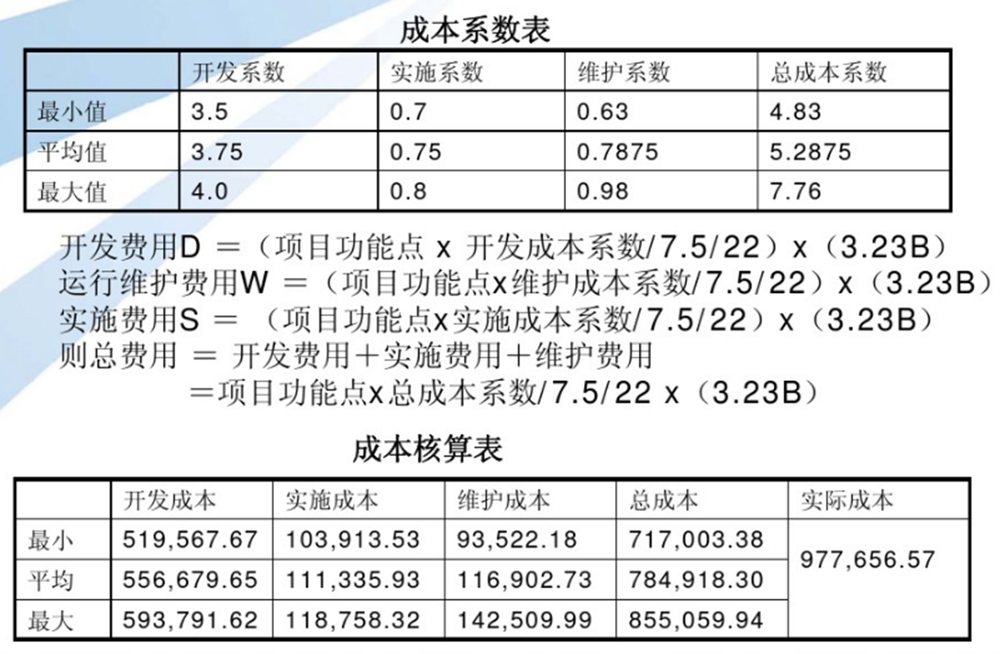
第六章 软件项目进度计划
项目网络图
- 项目活动之间的逻辑关系或排序的图形显示
- 网络图反映了完成项目所必须进行的活动
- 并非所有的WBS中的活动一定出现网络图中
- 箭头图法：
- 箭线表示活动，节点表示活动的开始和结束
- 节点的连接点反映活动顺序
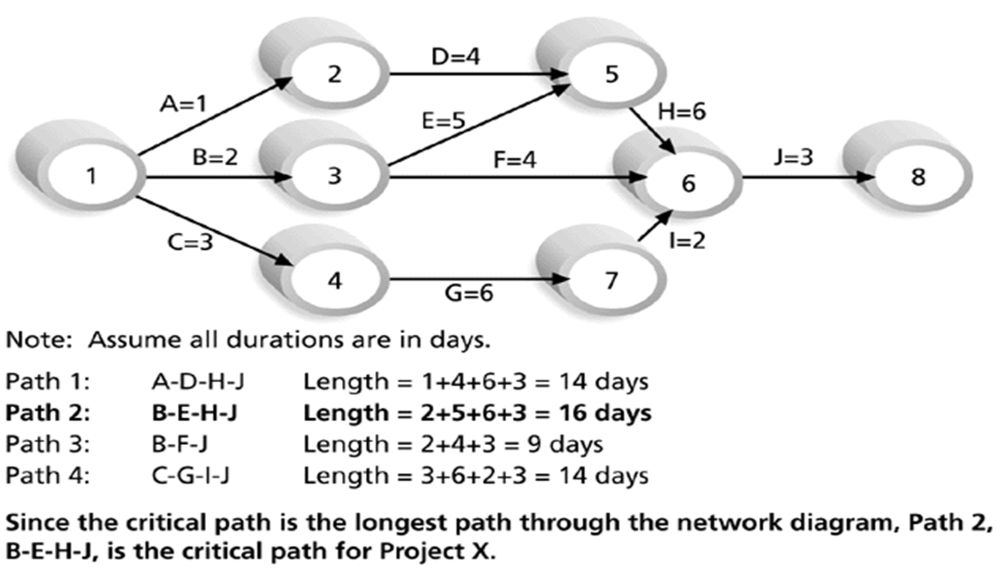
计划评审技术（Program Evaluation and Review Technique PERT）

PDM网络图(节点法或单代号网络图)

ADM网络图
- 又称箭线法或双代号网络图
- 箭线图示法，ADM=Arrow Diagramming Method
- 箭线表示活动,节点表示前一道工序的结束,同时也是后一道工序的开始


关键路径法CPM
基本概念
最早开始时间(ES:early start)：最早可开始时间
最晚开始时间(LS)：最晚可开始时间
最早完成时间(EF)
最晚完成时间(LF)
超前(Lead)：两个任务的逻辑关系所允许的提前后置任务的时间，它是网络图中活动的固定可提前时间
滞后(Lag)：两个任务的逻辑关系所允许的推迟后置任务的时间
浮动时间(Float): 一个活动在不影响项目完成的情况下可以延迟的时间
自由浮动（Free Float）:是在不影响后置任务最早开始时间的情况下本任务可以推迟的时间
总浮动（Total Float）:是在不影响项目最早完成时间的情况下本任务可以推迟的时间。
关键路径：浮动为0且是网络图中的最长路径，其上的任何活动延迟都会导致整个项目的延迟；是完成项目的最短时间量
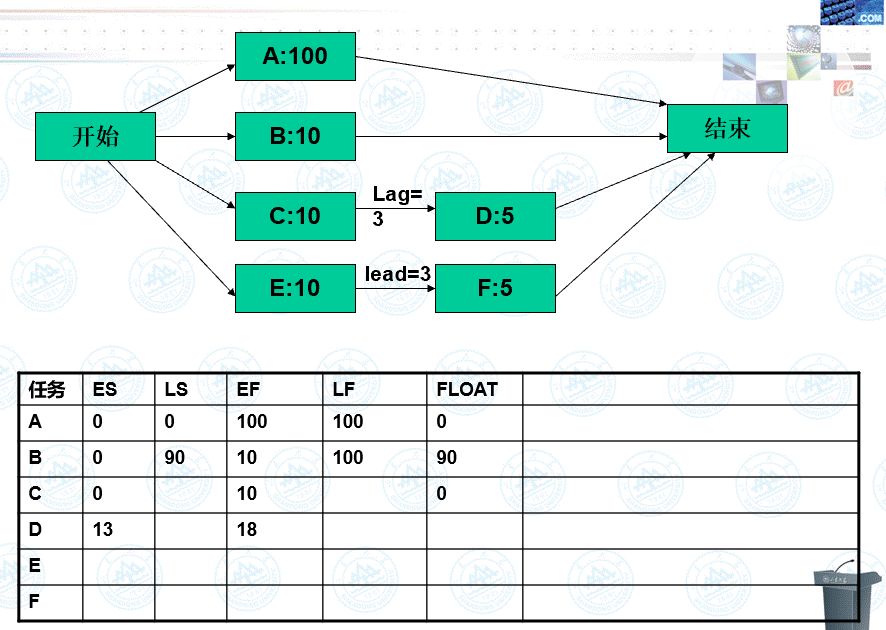
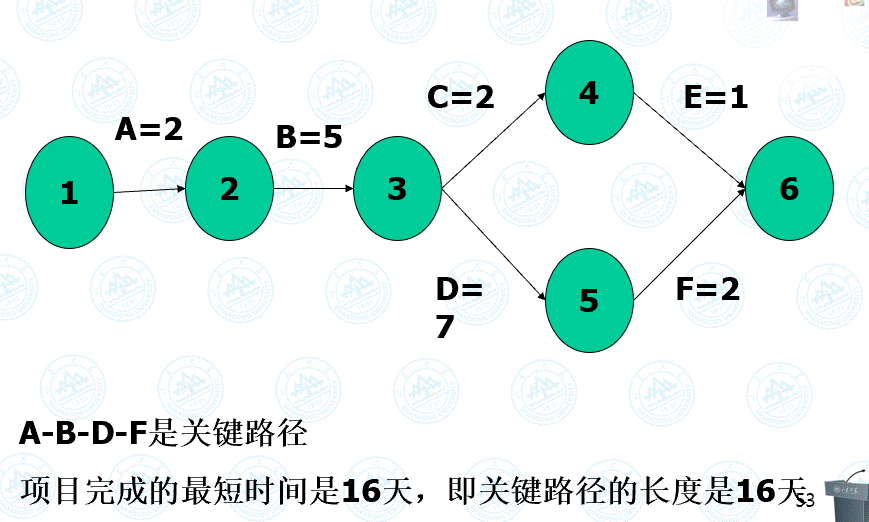
正推法计算最早开始时间和最早完成时间
- 首先确定项目的开始时间
- 项目的开始时间是网络图中第一个任务的最早开始时间
- 从左到右，从上到下进行任务编排
- 当一个任务有多个前置任务时，选择其中最大的最早完成日期作为其后置任务的最早开始日期
- 公式：
- ES+Duration=EF
- EF+Lag=ESs(其中： Ess是后置任务的最早开始时间）
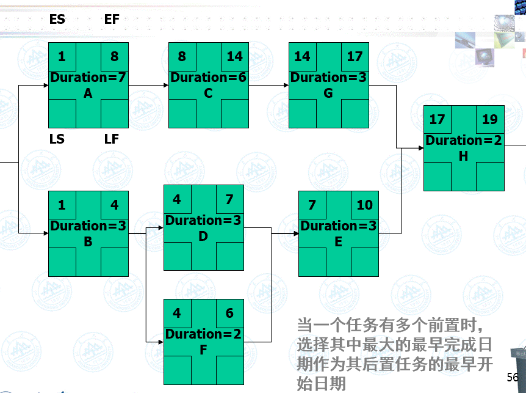
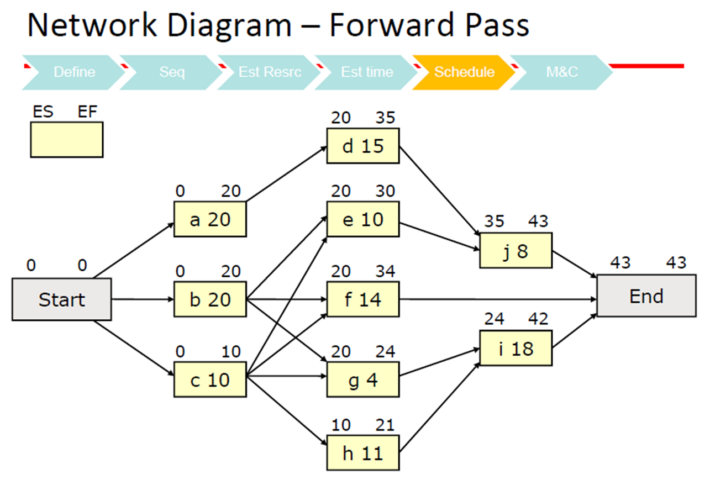
逆推法按照逆时间顺序计算各个任务的最晚开始时间和最晚完成时间
- 首先确定项目的完成时间
- 项目的完成时间是网络图中最后一个任务的最晚完成时间
- 从右到左、从上到下进行计算
- 当一个前置任务有多个后置任务时，选择其中最小的最晚开始日期作为其前置任务的最晚完成日期
- 公式：
- LF-Duration=LS
- LS-Lag=LFp(其中：是前置任务的最晚完成时间)
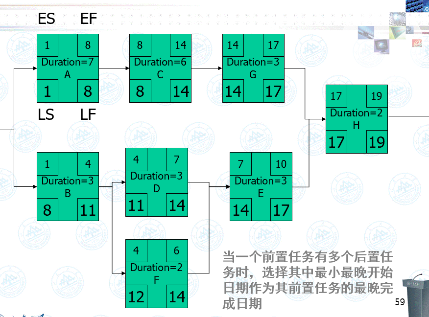
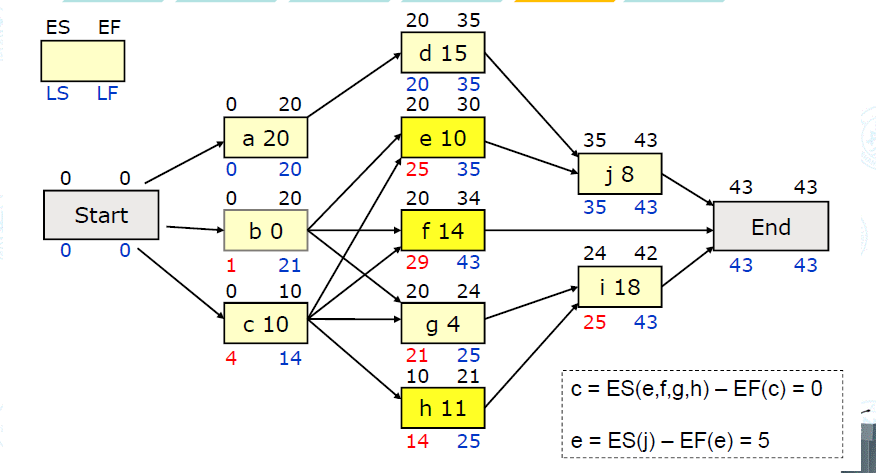
练习
- 作为项目经理，你需要给一个软件项目做计划安排，经过任务分解后得到任务A，B，C，D，E，F，G，假设各个任务之间没有滞后和超前，下图是这个项目的PDM网络图。通过历时估计已经估算出每个任务的工期，现已标识在PDM网络图上。假设项目的最早开工日期是第０天，请计算每个任务的最早开始时间，最晚开始时间，最早完成时间，最晚完成时间，同时确定关键路径，并计算关键路径的长度，计算任务F的自由浮动和总浮动.


第七章 项目质量计划
软件质量的因素
产品运行软件质量因素
产品修改软件质量因素
产品移植软件质量因素
软件质量过程
质量计划
- 是确定项目应达到的质量标准，以及决定如何满足质量标准的计划安排和方法
- 质量形成于产品或服务的开发过程中,而不是事后的检查测试过程中
质量保证
验证开发过程中是否遵循了合适的过程和标准
质量保证的主要活动是
- 项目产品审计:根据质量保证计划对项目过程中的工作产品进行质量审计
- 项目执行过程审计:对执行过程进行检查, 目的是确定所得到的经验教训, 从而提高组织对这个项目或其他项目的执行水平
质量控制
- 确定项目结果与质量标准是否相符,同时,确定消除不符的原因和方法
- 控制产品的质量，及时纠正缺陷